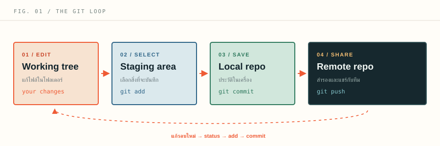
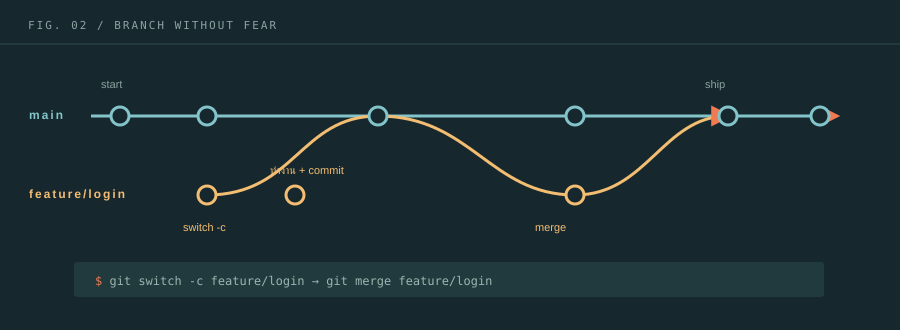
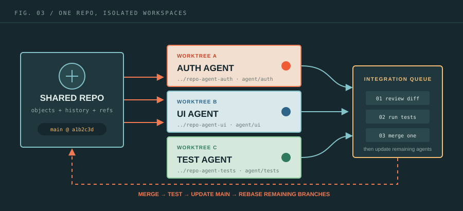
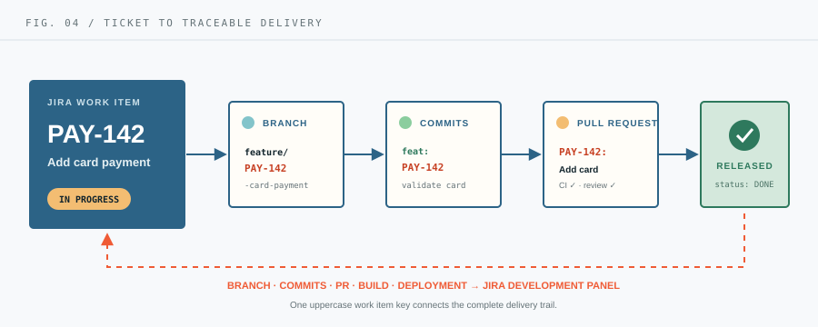

THE MENTAL MODEL
Git คืออะไร
และต่างจาก GitHub อย่างไร?
เริ่มจากแยก 2 คำนี้ให้ชัด: Git คือเครื่องมือบนเครื่องของเรา ส่วน GitHub คือบริการบนอินเทอร์เน็ตที่ช่วยเก็บ repo และทำงานร่วมกับคนอื่น
Git
ระบบควบคุมเวอร์ชันแบบกระจาย (distributed version control) ทำงานได้แม้ไม่มีอินเทอร์เน็ต
git commit
GitHub
แพลตฟอร์มออนไลน์สำหรับเก็บ Git repository, review code และทำงานร่วมกัน
github.com
SETUP ONCE
ติดตั้งครั้งเดียว
ตั้งค่าให้พร้อมใช้งาน
ดาวน์โหลด Git จาก git-scm.com/downloads ↗ แล้วเปิด Terminal (macOS/Linux) หรือ Git Bash / PowerShell (Windows)
เช็กว่าติดตั้งแล้วหรือยัง
คำสั่งนี้ควรแสดงหมายเลขเวอร์ชัน เช่น git version 2.45.0
$ git --versionบอกชื่อที่จะแสดงในประวัติ
ใช้ชื่อจริง ชื่อเล่น หรือชื่อทีมก็ได้ ชื่อนี้จะติดไปกับทุก commit
$ git config --global user.name "Your Name"ตั้งอีเมลให้ตรงกับบัญชี GitHub
ถ้าอีเมลตรง ระบบจะเชื่อม commit เข้ากับโปรไฟล์ได้ถูกต้อง
$ git config --global user.email "you@example.com"ตรวจสอบค่าที่ตั้งไว้
ดูค่าทั้งหมดที่ Git กำลังใช้ในเครื่องนี้
$ git config --global --listTHE DAILY LOOP
วงจรชีวิตไฟล์
จากการแก้ ไปสู่ประวัติ
Git มีพื้นที่สำคัญ 3 จุด การเข้าใจเส้นทางนี้จะทำให้คำสั่งอย่าง add, commit และ restore ไม่ใช่เรื่องท่องจำ

git add แล้วตามด้วย git commitไฟล์ที่เราเปิด แก้ไข และเห็นอยู่ในโฟลเดอร์โปรเจกต์
แก้ไฟล์พื้นที่คัดเลือกว่าการเปลี่ยนแปลงใดจะรวมใน commit ถัดไป
git addประวัติ commit ที่เก็บอยู่ในเครื่องเรา ย้อนดูได้แม้ offline
git commitชุดคำสั่งประจำวัน
$ git statusบอกว่าอยู่ branch ไหน ไฟล์ใดถูกแก้ และมีอะไรอยู่ใน staging
$ git diffดูบรรทัดที่เปลี่ยนในไฟล์ที่ยังไม่ stage
$ git add src/app.jsเลือกเป็นไฟล์จะปลอดภัยกว่า git add . ในงานใหญ่
$ git commit -m "describe the change"เขียน message ให้ตอบได้ว่า commit นี้ทำอะไร
FIRST REPOSITORY
สร้าง repo แรก
แบบทำตามได้ทีละบรรทัด
สมมติว่ามีโฟลเดอร์โปรเจกต์ชื่อ recipe-app อยู่แล้ว ขั้นตอนนี้จะเปลี่ยนโฟลเดอร์ธรรมดาให้กลายเป็น Git repository
- 01
เข้าไปยังโฟลเดอร์โปรเจกต์
cd recipe-app - 02
เริ่มต้น Git ในโฟลเดอร์นี้
Git จะสร้างโฟลเดอร์ซ่อนชื่อgit init.gitเพื่อเก็บประวัติ - 03
ตรวจสอบไฟล์ที่ Git มองเห็น
git status - 04
เพิ่มไฟล์ทั้งหมดเข้า staging
git add . - 05
สร้าง commit แรก
git commit -m "initial commit"
หลายโปรเจกต์ใช้ชื่อ main เป็นมาตรฐาน ถ้า Git รุ่นเก่ายังใช้ master เปลี่ยนได้ด้วยคำสั่งนี้
$ git branch -M mainกันไฟล์ที่ไม่ควร commit เช่น secret, dependency และไฟล์ build
$ touch .gitignorenode_modules/
.env
dist/
.DS_StoreSAFE EXPERIMENTS
Branch & merge
แยกงานโดยไม่รบกวน main
Branch คือเส้นทางประวัติแยกออกมา ให้เราทดลองฟีเจอร์หรือแก้บั๊กโดยไม่ทำให้ branch หลักเสียหาย

สร้างและสลับ branch
คำสั่งสมัยใหม่ที่ทำทั้งสองอย่างในครั้งเดียว
$ git switch -c feature/loginทำงานและ commit
แก้โค้ด ทดสอบ แล้วบันทึกเป็นก้อนเล็ก ๆ
$ git add .
$ git commit -m "add login form"กลับ main
ก่อน merge ให้ดึงประวัติล่าสุดของ main มาก่อนเสมอ
$ git switch main
$ git pullรวม branch
นำฟีเจอร์ที่เสร็จแล้วมารวมใน main
$ git merge feature/loginREMOTE & COLLABORATION
ทำงานกับ remote
ให้ทีมเห็นโค้ดชุดเดียวกัน
Remote คือ repository ที่อยู่บนเซิร์ฟเวอร์ เช่น GitHub, GitLab หรือ Bitbucket คำสั่งหลักมี 3 กลุ่ม: ส่งขึ้น, ดึงลง และดูความเปลี่ยนแปลง
git remote add origin URLเชื่อม repo ในเครื่องกับ GitHub ครั้งแรก
git push -u origin mainส่ง branch main ขึ้น remote และจำคู่ branch ไว้
git fetch originดึงข้อมูลใหม่มาดู แต่ยังไม่รวมเข้าการทำงาน
git pull origin mainดึงข้อมูลใหม่และรวมเข้ากับ branch ปัจจุบัน
Pull Request แบบสั้นที่สุด
- 01สร้าง branch
อย่าทำฟีเจอร์บน
mainโดยตรง - 02push branch ขึ้น GitHub
git push -u origin feature/login - 03เปิด Pull Request
อธิบายสิ่งที่เปลี่ยน วิธีทดสอบ และแนบ screenshot ถ้ามี
- 04review → แก้ → merge
เมื่อผ่านแล้วค่อยรวมเข้า
main
RECOVERY KIT
แก้พลาดอย่างปลอดภัย
เลือกเครื่องมือให้ตรงอาการ
ก่อนใช้คำสั่งย้อนกลับ ให้ถามตัวเอง 2 ข้อ: commit นี้ถูก push ไปแล้วหรือยัง? และ อยากเก็บการแก้ไขไว้ไหม?
git restore file.jsคืนไฟล์กลับไปตาม commit ล่าสุด
git restore --staged file.jsเอาออกจาก staging แต่ไม่ลบการแก้ในไฟล์
git commit --amendแก้ commit ล่าสุด — ใช้ก่อน push เท่านั้น
git revert <commit>สร้าง commit ใหม่เพื่อหักล้างของเดิม
git reset --soft HEAD~1ย้ายหัว commit แต่เก็บไฟล์และ staging ไว้
แก้ merge conflict เป็นขั้นตอน
เปิดไฟล์ที่ Git แจ้ง conflict แล้วหาเครื่องหมาย <<<<<<<
เลือกหรือเขียนโค้ดเวอร์ชันที่ถูกต้อง แล้วลบเครื่องหมาย conflict ทั้งหมด
รันทดสอบ จากนั้น git add file.js และ commit
ถ้าอยากยกเลิกการ merge ใช้ git merge --abort
ONE REPO, MANY AGENTS
หลาย Agent ใน 1 repo
ทำงานพร้อมกันโดยไม่เหยียบกัน
หัวใจสำคัญคือ อย่าให้หลาย Agent ใช้ working tree และ staging area ชุดเดียวกัน ให้แต่ละ Agent มี directory, branch และขอบเขตไฟล์ของตัวเอง แล้วค่อยรวมงานผ่าน Agent กลางหรือ Pull Request

แยกพื้นที่
หนึ่ง Agent เท่ากับหนึ่ง git worktree และหนึ่ง branch ห้ามแชร์ directory ทำงาน
แยก ownership
กำหนดว่า Agent ใดเป็นเจ้าของไฟล์หรือ module ไหน และระบุ shared hotspot ไว้ก่อนเริ่ม
รวมงานทีละชุด
ให้ Integrator review, test และ merge ตามลำดับ แล้วแจ้ง Agent ที่เหลือให้อัปเดตฐานใหม่
1. สร้าง worktree แยกให้แต่ละ Agent
รันจาก repository หลัก ตัวอย่างนี้สร้าง directory เป็นพี่น้องกับ repo เดิม แต่ทุก worktree ยังใช้ประวัติ Git ชุดเดียวกัน จึงประหยัดกว่าการ clone ซ้ำ
$ git fetch origin
$ git worktree add ../repo-agent-auth -b agent/auth origin/main
$ git worktree add ../repo-agent-ui -b agent/ui origin/main
$ git worktree add ../repo-agent-tests -b agent/tests origin/main
$ git worktree list
2. แจกงานด้วย ownership board
agent/authsrc/auth/**tests/auth/**
UI และ lockfile
agent/uisrc/components/**styles/**
Auth logic
agent/teststests/e2e/**fixtures/**
Production code*
integration/batch-42lockfile, migration,
generated files
ฟีเจอร์ใหม่
* ถ้า Test Agent พบ bug ให้รายงาน owner ก่อน เว้นแต่ได้รับมอบหมายให้แก้โดยตรง
Lockfile
package-lock.json, pnpm-lock.yaml ให้ Agent เดียวรับผิดชอบ dependency batch นั้น
Migration
จองลำดับหรือ timestamp ก่อนสร้าง เพื่อไม่ให้สอง Agent สร้าง migration ชนกัน
Generated files
ให้ Integrator รัน codegen หลังรวม source changes แล้ว อย่าให้ทุก Agent generate แยกกัน
3. สัญญา handoff ก่อนส่งงาน
Agent ทุกตัวควรส่งข้อมูลชุดเดียวกัน เพื่อให้ผู้รวมงานตรวจได้เร็วและไม่ต้องเดาว่าทดสอบอะไรมาแล้ว
- AGENT
- auth
- BRANCH
agent/auth- BASE
origin/main @ a1b2c3d- SCOPE
src/auth/**- COMMITS
9f3ae81- TESTS
npm test -- auth✓- RISKS
- session migration
- NEEDS
- UI consumes new type
4. Sync และรวมงานอย่างปลอดภัย
Worker sync เฉพาะ branch ตัวเอง
ก่อน handoff ให้อัปเดตฐานและรันทดสอบอีกครั้ง
git fetch origin
git rebase origin/mainIntegrator ดู diff และ test
ตรวจทุก commit เทียบกับ main โดยไม่พึ่งคำอธิบายอย่างเดียว
git diff origin/main...agent/authMerge ทีละ Agent
หลัง merge แต่ละชุด ให้รัน test ก่อนรับชุดถัดไป
git merge --no-ff agent/authแจ้ง Agent ที่เหลือ rebase
ลด conflict สะสมโดยให้ทุก branch ขยับตาม main ล่าสุด
git rebase origin/main5. ปิดงานและเก็บกวาด
$ git worktree remove ../repo-agent-auth
$ git branch -d agent/auth
$ git worktree prune
ISSUE-DRIVEN DELIVERY
Git style Jira
ให้ ticket เดินไปกับ code
ใช้ Jira key เป็นด้ายเส้นเดียวที่เชื่อม requirement, branch, commit, Pull Request และ deployment เข้าด้วยกัน ตัวอย่างทั้งบทนี้ใช้ ticket PAY-142: “เพิ่มการชำระเงินด้วยบัตร”

1. Convention กลางของทีม
PAY-142Key ต้องเป็นตัวพิมพ์ใหญ่และตรงกับ Jira
feature/PAY-142-card-paymentประเภท / key / คำอธิบายสั้นแบบ kebab-case
feat(payment): PAY-142 validate cardConventional Commit + Jira key + สิ่งที่เปลี่ยน
PAY-142: Add card paymentเก็บ key ไว้ใน title แม้ใช้ squash merge
2. ตั้งชื่อ branch ตามประเภทงาน
feature/PAY-142-card-paymentความสามารถใหม่ตาม story
bugfix/PAY-203-gateway-timeoutแก้ defect ในงานปกติ
hotfix/OPS-77-restore-loginแก้ production เร่งด่วน
chore/DEV-91-upgrade-eslintงานระบบหรือ maintenance
$ git switch main
$ git pull --ff-only origin main
$ git switch -c feature/PAY-142-card-payment
3. Commit ให้ทั้งคนและ Jira อ่านรู้เรื่อง
ใช้รูปแบบ <type>(<scope>): <JIRA-KEY> <imperative summary> และแยก commit ตามเหตุผล ไม่ใช่ตามจำนวนไฟล์
feat(payment): PAY-142 add card formเพิ่ม behavior ใหม่
test(payment): PAY-142 cover declined cardเพิ่ม test ของ ticket เดิม
fix(payment): PAY-142 handle gateway timeoutแก้ bug ที่พบระหว่างทำงาน
docs(payment): PAY-142 document retry policyอัปเดตเอกสารที่เกี่ยวข้อง
4. Pull Request ต้องตอบว่า “พร้อมส่งหรือยัง”
PAY-142 — Add card payment
เพิ่ม card form, validation และ gateway error handling
✓ valid card ✓ declined card ✓ timeout state
npm test -- payment — passed
เปิดผ่าน feature flag; ปิด flag เพื่อ rollback
5. Map Jira status กับเหตุการณ์จริง
Acceptance criteria ชัดและเริ่มงานได้
ยังไม่มี branchสร้าง branch และมี owner แล้ว
first pushPR พร้อม review และ CI ผ่าน
PR readyรวมเข้า test environment แล้ว
deployed to QAผ่าน Definition of Done ของทีม
releasedชื่อ status ปรับให้ตรง workflow ของทีม และอย่าถือว่า “merge แล้ว = Done” หากยังต้อง QA หรือ deploy
6. Smart Commits — ใช้เมื่อทีมเปิดรองรับ
Smart Commits สามารถ comment, log time หรือสั่ง transition Jira จาก commit message ได้ แต่เป็นความสามารถเสริมและต้องตั้งค่า integration, permission และอีเมลผู้ commit ให้ตรงกับบัญชี Jira
PAY-142 #comment validation passedPAY-142 #time 2h 30m card validationPAY-142 #start-reviewPAY-142 #time 2h #comment tests passed #resolve7. Jira style สำหรับหลาย Agent
Add card payment
PAY-143Auth Agentfeature/PAY-143-payment-token
PAY-144UI Agentfeature/PAY-144-card-form
PAY-145Test Agenttest/PAY-145-payment-e2e
Coordinator ดู parent story ส่วน Agent แต่ละตัวรับ subtask key ของตัวเอง ทำให้ branch, commits, PR และสถานะแยกตรวจสอบได้ชัดเจน ก่อน Integrator รวมทุกชิ้นตาม acceptance criteria ของ PAY-142
KEEP THIS NEARBY
Cheat sheet
คำสั่งที่ใช้บ่อยในหน้าเดียว
ไม่จำเป็นต้องจำทั้งหมด เริ่มจาก 8 คำสั่งที่อยู่ในวงจรประจำวัน แล้วค่อยเติมคำสั่งอื่นตามสถานการณ์
git initเริ่ม repo ใหม่git clone URLคัดลอก repo จาก remotegit statusดูสถานะไฟล์git diffดูความต่างgit add fileเลือกไฟล์เข้า staginggit commit -m "..."บันทึกประวัติgit log --onelineดูประวัติแบบสั้นgit switch -c nameสร้าง branch ใหม่git switch mainสลับ branchgit merge nameรวม branchgit pullดึงและรวมจาก remotegit pushส่งขึ้น remotegit log --oneline --graph --decorate* 4e8c2a1 (HEAD -> main) add curry recipe * a11ce09 improve recipe card layout |\ | * b7d4f20 (feature/login) add login form |/ * 10f2c8b initial commit